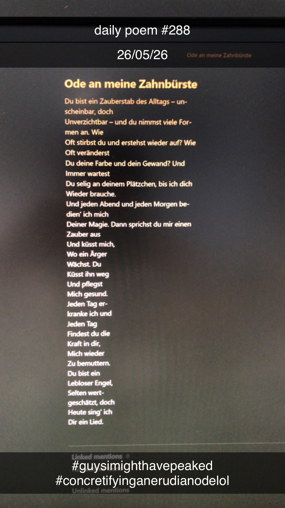

Ode an meine Zahnbürste
Du bist ein Zauberstab des All-
tags – unscheinbar, doch un-
verzichtbar – und du nimmst
Viele Formen an. Wie oft stirbst
Du und erstehst wieder auf? Wie
Oft veränderst du deine Farbe
Und dein Gewand? Und immer
Wartest du selig an deinem Plätz-
chen, bis ich dich wieder brau-
che. Und jeden
Abend und
Jeden Morgen
Bedien' ich
Mich deiner
Magie. Dann
Sprichst du
Mir einen Zau-
ber aus und
Küsst mich,
Wo ein Ärger
Wächst. Du
Küsst ihn weg
Und pflegst
Mich gesund.
Jeden Tag er-
kranke ich und
Jeden Tag
Findest du die
Kraft in dir,
Mich wieder
Zu bemuttern.
Du bist ein
Lebloser Engel,
Selten wert-
geschätzt, doch
Heute sing' ich
Dir ein Lied.
